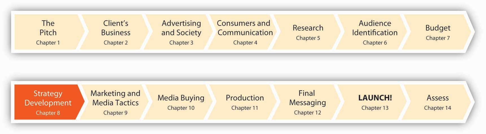

Figure 8.1 Eight Months to Launch!
We are now eight months prior to the public launch of the msnbc.com campaign. The team at SS+K and Catherine Captain from msnbc.com have studied their customers. They have spent a considerable amount of time breaking down their prospective audience into segments. They have begun to identify where the competition is positioned and where there may be opportunities to serve a segment of customers better.
Now the work really begins. We must devise a strategy for this campaign. This will lead us into establishing our overall marketing strategy, and more specifically the strategy to position msnbc.com in this crowded marketplace.
Get ready. We only have eight months to Launch! It’s going to be a wild ride!
No false starts: “If this didn’t go well, there would be no more marketing as msnbc.com.”
When Catherine Captain left her job as USA Today’s Director of Marketing Research in April 2006 to become the VP-marketing for msnbc.com, she declared, “I have left the number one print newspaper in the country to join the number one online news site in the country. Who could ask for more?”
The aptly named Captain did ask for more—quickly, for she realized that a rapidly changing online news industry was threatening the market dominance msnbc.com had enjoyed for over a decade. Within less than a year of assuming her new post, Captain had requested and secured a $7 million marketing budget and had chosen strategic communications firm SS+K to oversee development of the online news giant’s first marketing campaign. Catherine’s challenge was clear.
Planning Is Everything. Although it’s tempting to just jump in and create some cool commercials, in reality the advertising you see or hear is just the tip of the iceberg. As Catherine at msnbc.com knows all too well, there are plenty of competitors out there who also can do cool advertising. Devising a strategy requires careful thought about your strengths and weaknesses. In addition, the only thing we can count on is that things change: a company must take stock of its environment and monitor what consumers think of it over time so it can anticipate changes instead of waiting to be surprised by them. By the time changes take place, it’s too late to react to them effectively. So, by strategyA detailed plan that specifies overall objectives the client wishes to reach based upon a realistic assessment of its environment and what it is capable of achieving, as well as its general approach to reaching those objectives. we mean a detailed plan that specifies overall objectives the client wishes to reach based upon a realistic assessment of its environment and what it is capable of achieving, as well as its general approach to reaching those objectives.